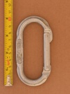
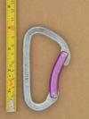

| Image | Summary | ||||
|---|---|---|---|---|---|
 | Omega Pacific (D) (cold forged) | D | n/a | n/a | 34kN cold-forged D |
|  | Omega Pacific (Oval) (v1) | oval | n/a | n/a | standard 1990s oval |
 | Omega Pacific Classic Bent Gate | asymmetric D | n/a | n/a | inexpensive basic carabiner, flat-spun rivets may have issues |
 | Omega Pacific Classic Straight Gate | asymmetric D | n/a | n/a | inexpensive basic carabiner, flat-spun rivets may have issues |
 | Omega Pacific Doval | D | n/a | n/a | worst features of both a D and an oval |
 | Omega Pacific Five-O Locking Gate (forged markings) | S-spine | manual | gate stopped - gate stop | Omega Pacific's flagship carabiner in the early 2000's |
 | Omega Pacific JC (long split) | swept spine | n/a | n/a | unique cold-forged split-spine construction |
 | Omega Pacific JC (short split) | swept spine | n/a | n/a | unique split-spine cold-forged construction |
 | Omega Pacific JC (no CE) (long split) | swept spine | n/a | n/a | unique cold-forged split-spine construction |
| Omega Pacific Jake Keylock Screw Lock | HMS | manual | gate stopped - thread runout | last iteration of this iconic HMS carabiner | |
 | Omega Pacific Jake Quik-Lok | HMS | full-auto | twist | classic HMS with offset gate in twist lock |
 | Omega Pacific Jake Screw-Lok | HMS | manual | nose stopped | classic HMS, offset gate |
 | Omega Pacific Omegalite | asymmetric D | n/a | n/a | small diameter roundstock minimizes weight, unusual crossload prone nose |
|  | Omega Pacific Omegalite 3 Bent Gate (flat nose) | asymmetric D | n/a | n/a | prominent nose & fractional strength rating |
 | Omega Pacific Standard Locking D | D | manual | gate stopped | symmetric D |
 | Omega Pacific Standard Oval (upper case KN) | oval | n/a | n/a | overbuilt oval |
 | Omega Pacific Standard Oval Locking | oval | manual | gate stopped | overbuilt oval |